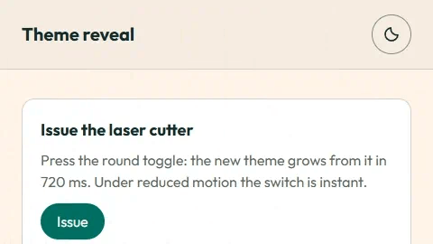

Issue the laser cutter
Press the round toggle: the new theme grows from it in 720 ms. Under reduced motion the switch is instant.
Light, Dark or System
The same call works for a segmented picker; the circle grows from the button you pressed.
Image previews
Static posters are shown first. Play starts an animated image; Pause restores its poster. Reduced motion keeps posters visible.
